Homeostasis
Chapter 16 of 19Introduction
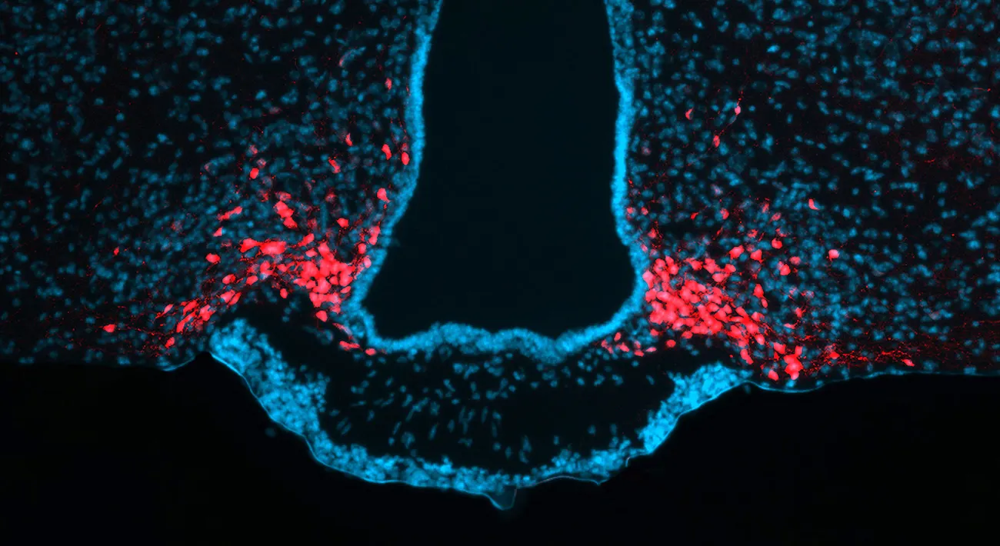
How long can you hold your breath? Most people can comfortably hold their breath for about 30-60 seconds. Trained athletes and people who regularly regulate their breathing (for example, musicians who sing or play wind instruments) can hold their breath for several minutes. The world record for holding the breath is over 20 minutes!
No matter how long you can hold your breath, at some point, everyone feels the overwhelming compulsion to finally breathe in and out. Because all living cells require a steady source of oxygen, animals must constantly measure and maintain optimal internal oxygenation levels to survive. In response to a low oxygenation state, animals engage in response mechanisms to correct for the deficiency—in this case, taking in a deep breath of air.
Indeed, to survive and flourish, all animals must maintain optimal levels of many life-sustaining factors. In addition to oxygen, animals thrive within an optimal temperature range such that they are not too hot or cold. Animals must ingest an optimal amount of calories from food to provide for their daily metabolic energy needs. Animals must also regularly ingest an optimal amount of water to keep their cells and tissues properly hydrated. Failure to obtain appropriate levels of these factors can lead to unhealthy or even lethal outcomes.
Homeostasis (from the Greek roots homeo, meaning “similar,” and stasis, meaning “stable”) is the maintenance of a stable internal environment. To maintain an optimal range of oxygen, temperature, calories, and water, the nervous system must sense the internal environment and ultimately influence physiology and behavior to motivate an animal to take a breath, to move to a warmer/cooler environment, to eat a meal, or to take a drink of water (Homeostasis). Our sensations of being hot/cold, hungry/full, and thirsty/satiated are all manifestations of our central homeostatic systems attempting to keep us alive.
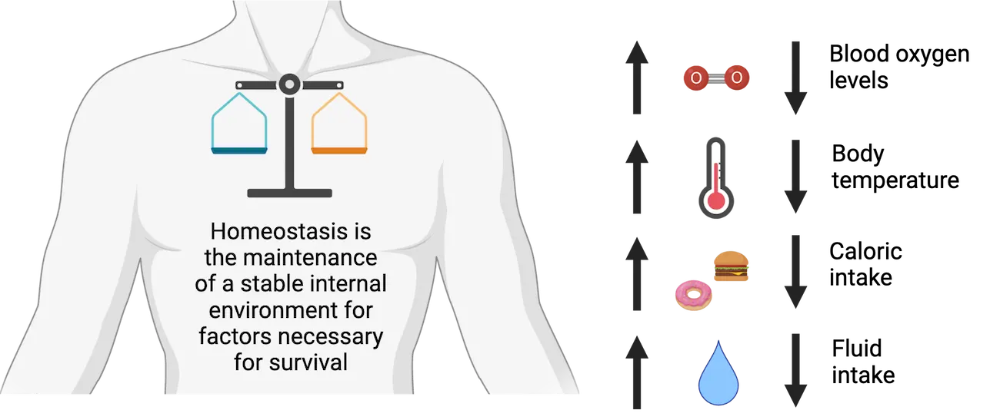
The purpose of this chapter is to describe the neurobiology of homeostasis. First, we will discuss fundamental principles of homeostasis and the general mechanisms by which the nervous system measures and maintains internal states. Then, we will survey the mechanisms by which the nervous system maintains homeostasis for oxygen, temperature, calories, and water. Some behaviors, not described in this chapter, are also homeostatically regulated. For example, sleep (see Introduction) is a behavior under homeostatic control–the more an animal is sleep deprived, the more the nervous system increases the drive to sleep to make up for the deficiency. In some animals, social behavior is thought to be homeostatic, as isolation from peers for too long produces a stronger desire to engage with others.
In addition to the systems described in this chapter, there are other mammalian homeostatic systems that are not regulated by the nervous system. Instead, these systems are predominantly regulated by endocrine glands throughout the body that release hormones to cause physiological effects. For example, the amount of sugar in the blood (glucose homeostasis) is regulated by the release of the hormones insulin and glucagon from the pancreas. Details on these homeostatic mechanisms can be found elsewhere–for this chapter, we will focus on homeostatic systems regulated by the nervous system.
16.1Principles of Homeostasis
By the end of this section, you should be able to
- Describe the major principles of homeostasis including set points and negative feedback mechanisms.
- Explain the components of a generic homeostatic system including sensors, control systems, and effectors.
Animals maintain a stable internal environment using multiple homeostatic systems that each regulates a distinct, life-sustaining factor. For example, the neurons and organs that regulate hunger and energy balance are distinct from those that regulate thirst and water balance. Although distinct, these homeostatic control systems all utilize the same fundamental principles.
Homeostatic systems maintain life-sustaining factors at optimal set points
Animals maintain homeostasis for a particular biological parameter by maintaining values at an optimal set point. For example, most humans maintain a blood oxygen level of 75-100 mmHg (the partial pressure of oxygen in the bloodstream), a core body temperature of 37 °C, a caloric intake of 2000-2500 calories per day, and a blood osmolarity of 300 mOsm/L (the concentration of solutes in fluids). Set points are not necessarily a specific value, but rather a narrow range of values by which an animal can survive in good health. Individuals within a species may have slightly different set points based on their genetics and their environment.
Set points for specific factors can change over a 24-hour circadian period. For example, human core body temperature is approximately 36.5 °C at night when we are sleeping compared with 37.5 °C during the day when we are more active (see Introduction). Set points can also change throughout the life of an animal. For example, as animals develop from juveniles to adults (such as humans during puberty), they require a much higher caloric intake than when they were younger. Later in life, as animals age, metabolism slows down and daily caloric needs decline.
Sometimes, during certain environmental challenges, it is temporarily beneficial to maintain factors outside normal set point values. Allostasis (from the Greek root allo, meaning “other”) is the temporary maintenance of internal physiological conditions outside the normal range. These changes in set points allow an organism to respond to an immediate threat to survival. For example, when we are sick, one response is to develop a “fever” in which our set body temperature increases by 1-2 °C to combat the infection (Allostasis example: Fever). When we experience a stressful environmental condition, such as taking an exam, speaking in front of an audience, or undergoing something truly life-threatening, we undergo a temporary elevation in body temperature and heart rate while simultaneously undergoing a temporary decrease in hunger and thirst (see Introduction). While these allostatic responses help to temporarily persevere against short-term challenges, it is not optimal to be in a state of allostasis for too long. For example, being in a state of chronic stress can ultimately lead to cardiovascular disease and aberrations in body weight.
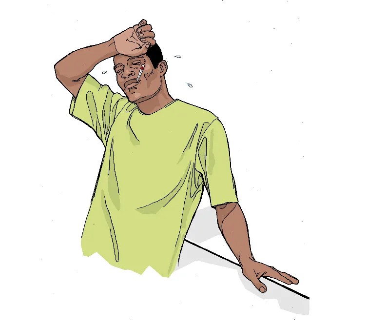
Homeostatic systems maintain set points using negative feedback mechanisms
Animals maintain set points by utilizing negative feedback mechanisms. In these systems, a deviation from a set point causes a response that counteracts the change, thereby restoring optimal set point values (Homeostatic negative feedback loop). There are three components of a negative feedback loop: A sensor detects the initial deviation from the normal set point. A control system receives and processes information from the sensors, ultimately causing an effector system to produce a response that counteracts the change.
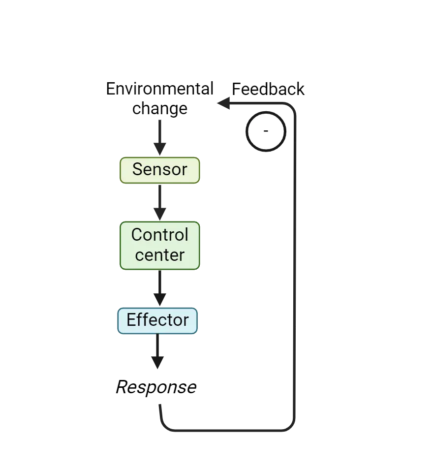
A familiar example of a negative feedback mechanism is the cooling system of a laptop computer (Unidirectional negative feedback loop). If a laptop becomes too hot, the high temperatures could damage the circuits and hardware. Small thermometers within the laptop serve as sensors, detecting temperatures higher than an optimal value. These thermometers signal to the central processing unit that the computer is too hot. The central processing unit then turns on an effector system—fans within the computer—to blow out the hot air. Once the computer cools down, the thermometers detect the cooler temperatures, the central processing unit turns off the fans, and an optimal temperature is achieved.
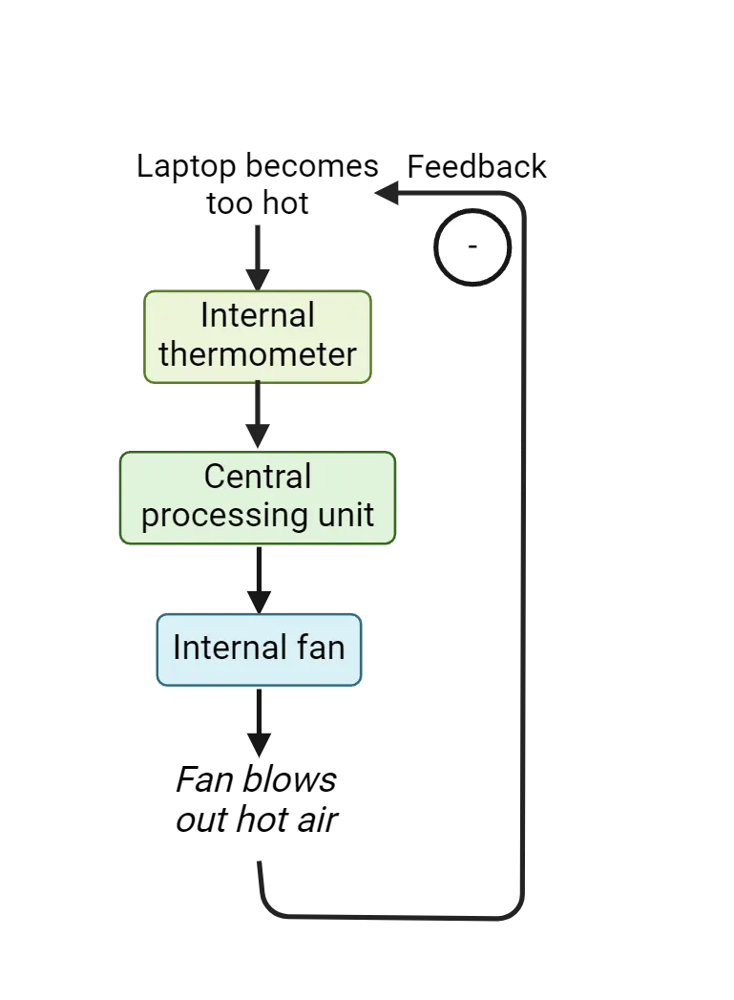
A computer fan is an example of a unidirectional homeostatic system, a feedback mechanism in which a factor is regulated in only one direction—in this case, whether the computer becomes too hot (but not if the computer becomes too cold). In contrast, bidirectional homeostatic systems regulate deviations from a set point in two directions. For example, consider a home thermostat system that maintains an optimal temperature range so that a home does not become too hot or too cold (Bidirectional negative feedback loop). An increase in temperature is sensed by a thermometer inside the home and is relayed to the control system, the thermostat. The thermostat then causes an effector system, an air conditioner, to blow cool air into the home to decrease the temperature. If the home becomes too cold, this decrease is also detected by a thermometer and relayed to a thermostat. The thermostat responds to this change by turning on the home furnace to increase heat. Therefore, the home thermostat system functions as a bidirectional homeostatic system to keep the temperature within a narrow range.
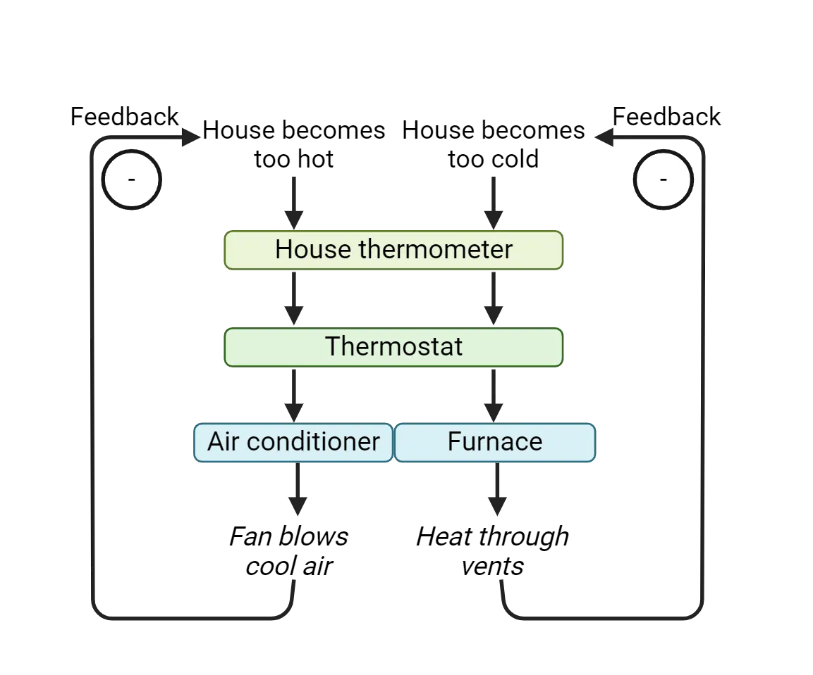
Just as engineers design unidirectional and bidirectional homeostatic mechanisms in computers, home thermostats, and other technology, animals have evolved homeostatic mechanisms of their own that work in the same way. Instead of electrical circuits in wires, these homeostatic mechanisms depend on neural circuits throughout the brain and body to precisely sense a deviation from a set point, to integrate and process these changes in control systems, and to effect physiological and/or behavioral effector systems to counteract the change.
The nervous system regulates homeostasis using different effector systems
Many homeostatic systems throughout the body, such as those that regulate blood oxygenation levels, body temperature, caloric intake, and fluid intake, are regulated by the nervous system. The challenge for neuroscientists interested in studying the neurobiology of homeostasis is to understand the biological substrates of these homeostatic mechanisms. How do animals sense changes in their internal environments, integrate this information within control centers, and ultimately cause changes in physiology and behavior to maintain homeostasis? What and where are the relevant neurons and cell types, and how do they communicate information with each other?
The nervous system detects changes in set points via sensory cells within the central and peripheral nervous systems (Neural mechanisms of homeostasis). These specialized cells express unique ion channels and membrane-bound proteins to detect changes in blood chemistry, body temperature, stretch of visceral organs, blood osmolarity, and hormones released throughout the body. In response to deviation from a set point, these sensory cells communicate with other cells in the brain, typically in the brainstem or hypothalamus, that function as control centers (see Introduction). These control centers integrate information and regulate effector systems that counteract the deviation from the set point.
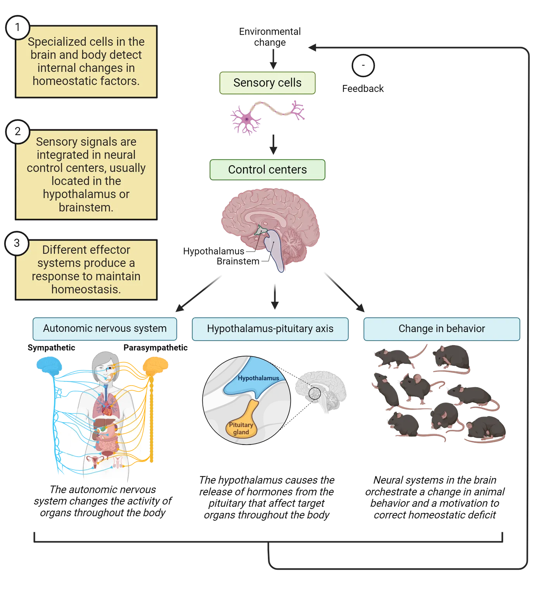
In general, these effector systems modulate changes in life-sustaining factors in one of three ways (Neural mechanisms of homeostasis):
- Some effector systems cause a physiological change via the autonomic nervous system (see Introduction). The autonomic nervous system regulates physiological functions, such as heart rate or respiratory rate, that are typically not under conscious control. The autonomic nervous system can be anatomically and functionally divided into the sympathetic nervous system and the parasympathetic nervous system, two distinct neural networks that often cause opposing effects on target neurons. The sympathetic division typically facilitates an increase in activity necessary for a “fight or flight” response in which an animal is alert and active. For example, when the sympathetic nervous system is preferentially activated, heart rate increases and digestive functions decrease. In contrast, the parasympathetic nervous system typically facilitates a non-emergency, energy-replenishment state that can be characterized as more of a “rest and digest” response, for example by decreasing heart rate and increasing digestion. Therefore, the autonomic nervous system can cause changes in physiological states that affect the maintenance of homeostasis for physiological factors. These changes are often involuntary and automatic, occurring without any conscious realization by the animal undergoing these changes.
- Some effector systems cause a physiological change via the neuroendocrine system. This system causes the release of hormones that affect target organs throughout the brain and body. Most of these hormones are released via the hypothalamus-pituitary system, a parallel series of fibers that originate from the hypothalamus and cause hormone release from the pituitary gland. Like regulation by the autonomic nervous system, homeostatic regulation by the neuroendocrine system is involuntary and unconscious.
- Some effector systems regulate homeostasis by changing motivational drive and animal behavior. For example, if there is insufficient calories/nutrients or insufficient water within an animal, the nervous system can correct for these deficiencies by increasing the drive for food or water. We describe these increases in motivation as “hunger” and “thirst,” and they ultimately cause a change in behavior that can maintain homeostatic set points. Unlike regulation by the autonomic nervous system and neuroendocrine systems, behavioral responses are voluntary and conscious. Although an animal cannot voluntarily choose to be hungry or thirsty, an animal can choose how to behave during these motivational states. However, the longer the animal goes without eating or drinking, the stronger the motivational drive, and animals gradually feel more uncomfortable until they ultimately act on their homeostatic needs.
Summary
Animals maintain a stable internal environment through the process of homeostasis. Life-sustaining factors, such as oxygen, temperature, food, and water, are maintained at optimal set-points for each organism. Animals maintain set-points via negative feedback mechanisms, in which a sensor detects a deviation from a set-point, a control system processes information from one or more sensors, and an effector system produces a response that counteracts the change. Many homeostatic systems throughout the body are regulated by the nervous system. The challenge for neuroscientists interested in studying the neurobiology of homeostasis is to understand the specific sensors, control centers, and effectors that regulate each life-sustaining factor.
Key terms
Homeostasis, set point, allostasis, negative feedback, sensor, control system, effector system, unidirectional homeostatic system, bidirectional homeostatic system, autonomic nervous system, sympathetic nervous system, parasympathetic nervous system, neuroendocrine system, behaviorPractice The multiple-choice and fill-in-the-blank questions for this section are interactive and live on OpenStax, so they are not carried here: open the book on openstax.org.
16.2Neural Control of Blood Oxygenation Levels
By the end of this section, you should be able to
- Describe the reasons why animals need to maintain homeostasis for blood oxygen and carbon dioxide.
- Describe the neural components of homeostatic systems that regulate blood oxygenation levels.
Consider some of the changes that occur in your body as you go for a run. Soon after you begin, you feel yourself breathing much faster. Your respiratory rate—the frequency with which you inhale and exhale—increases rapidly. Most people also experience a 2-2.5x increase in heart rate. When you eventually stop running and “catch your breath,” your respiratory rate and heart rate slowly return to normal. These increases in respiratory rate and heart rate accompany most forms of physical activity, from aerobic exercise to weightlifting, eventually returning to normal levels at rest.
Vertebrate animals increase respiratory rate and heart rate to increase blood oxygen levels and decrease carbon dioxide. Oxygen is required for cellular respiration, the process by which cells generate energy from the reaction of oxygen with molecules derived from food. Cells that are more active require more oxygen. Skeletal muscle cells, the cells that make up muscles throughout the body under voluntary control, greatly increase their activity during exercise and therefore greatly increase their need for oxygen from the bloodstream. At the same time, they release more carbon dioxide, which the bloodstream circulates to the lungs to exhale.
To ensure an optimal amount of oxygen and swift removal of carbon dioxide, homeostatic mechanisms detect changes in the levels of these gases in the bloodstream and respond by modulating respiratory rate. Increasing the respiratory rate increases the diffusion of oxygen from the air into the lungs and, in turn, the removal of carbon dioxide from the lungs to the air. In parallel, these homeostatic mechanisms also modulate heart rate to increase or decrease the flow of oxygenated blood to cells throughout the body.
Homeostatic regulation of respiratory rate
You’re out for a jog and your respiratory rate increases. How does the nervous system measure the need for oxygen and ultimately regulate breathing?
Blood oxygenation levels are indirectly sensed by a population of neurons in the brainstem collectively known as the medullary respiratory control center (MRCC) (Control of blood-oxygen levels by the medullary respiratory control center). These neurons do not actually sense oxygen directly—instead, they measure the pH (acidity) of the blood. Why pH? When cells consume more oxygen, they release more carbon dioxide as a waste product. Carbon dioxide is not very soluble in the blood, so it is converted to another molecule called carbonic acid. Therefore, increases in carbon dioxide cause a very slight increase in the acidity of blood, which can be detected by the specialized cells in the MRCC. These cells therefore serve as sensors for oxygen homeostasis. The pH scale inversely correlates with acidity–the lower the pH, the more the blood is acidic. Therefore, if the blood becomes slightly more acidic due to an increase in carbonic acid, the pH decreases and activity in MRCC neurons increases.

The MRCC also integrates information from other parts of the brain, such as from neurons that regulate the conscious choice to inhale or exhale. Therefore, the MRCC also serves as a control center that ultimately regulates breathing patterns based on the homeostatic need for oxygen and the conscious choice to take a breath. Interestingly, MRCC neurons collectively exhibit a rhythmic, bursting firing pattern of action potentials that correlates with the degree of oxygen in the blood. At rest, the MRCC exhibits bursts of activity approximately 12-16 times per minute. As oxygen levels decline, carbon dioxide levels rise, and the pH of the blood becomes slightly more acidic during a vigorous run, the MRCC oscillatory activity can increase to around 40-60 bursts per minute.
Cells in the MRCC ultimately regulate respiratory rate by releasing neurotransmitter onto specialized effector neurons in the spinal cord (Control of blood-oxygen levels by the medullary respiratory control center). These neurons, in turn, project axons (in a nerve called the “phrenic nerve”) to muscle cells of the diaphragm. Each time the MRCC neurons exhibit a burst of activity, the diaphragm contracts downward, causing a negative pressure to build in the lungs. This pressure causes an animal to inhale, sucking oxygen-rich air from the environment into the lungs where it can diffuse into the bloodstream. Conversely, when the diaphragm relaxes, it pushes against the lungs, causing an animal to exhale and force carbon dioxide-rich air out to the environment.
Therefore, in response to relatively low blood oxygen levels, the MRCC serves as both sensor and control center to regulate contraction and relaxation of the diaphragm. When blood oxygen levels start to increase, such as at the end of a run, the frequency of MRCC bursting activity decreases, and respiratory rate returns to normal. Changes in respiratory rate can also be observed during a change to high or low altitude. A person who lives at sea level and travels to a high-altitude environment, such as on a ski trip, may exhibit an increased respiratory rate due to a decrease in oxygen at higher elevations. Eventually, over several days, the body compensates in other ways (such as producing more red blood cells, the cells that carry oxygen throughout the body), and respiratory rate returns to normal.
Homeostatic regulation of heart rate
If low blood oxygenation levels only caused an increase in respiratory rate, the blood lining the lungs would become oxygenated much more quickly, but the rate at which this blood was delivered to the cells throughout the body would not be any faster. Therefore, low blood oxygenation levels also cause an increase in heart rate to pump oxygen-rich blood to cells in need.
Low blood oxygen levels affect heart rate by causing a change in neural activity within a population of neurons in the brainstem called the medullary cardiovascular control center (MCCC) (Control of heart rate by the medullary cardiovascular control center). These neurons are adjacent to the MRCC, but unlike the MRCC, they do not exhibit a rhythmic firing pattern. Instead, they exhibit a low frequency, stable firing pattern of action potentials at rest. These cells also sense blood oxygen levels indirectly via a change in blood pH. When the blood becomes slightly acidic (the pH decreases) due to decreases in oxygen and increases in carbon dioxide, the MCCC senses these changes, and the action potential firing frequency slightly increases. These cells also receive incoming synaptic input from other areas of the brain that regulate heart rate, such as populations that regulate wakefulness and stress. For example, the thought of an upcoming exam or public speaking event might cause an increase in heart rate as the body prepares itself to survive the stressor (see Introduction). These MCCC cells therefore serve as both a sensor and a control center because they integrate information from multiple sources to ultimately affect heart rate.
![Top shows diagram of human brain/spinal cord and heart. Neurons from the medullary cardiovascular control center are shown connecting to parasympathetic and sympathetic systems. Sympathetic neurons go to SA node, ventricles and also arterioles. Parasympathetic neurons go to SA mode. To the right, a flowchart of the feedback processes described in the main text is shown. Bottom shows a diagram of a MCCC neuron at rest, firing infrequently, and a MRCC neuron under exercise or stress, firing rapidly. At rest, a heart is also shown getting ACh released on it (Parasympathetic activity dominates. Heart rate lower, ventricles contract less intensely). Under exercise or stress, a heart is shown getting NE released on it (Sympathetic activity dominates. Heart rate increases, ventricles contract more intensely).](../assets/textbook/img/Image-16.04_Control-of-heart-rate-by-the-medullary-cardiovascular-control-center.webp)
MCCC neurons regulate heart rate by controlling the relative activity of sympathetic and parasympathetic nerves that synapse onto the heart (Control of heart rate by the medullary cardiovascular control center). The sympathetic nerve releases the neurotransmitter norepinephrine onto the heart and causes an increase in heart rate, an increase in the forcefulness of the heart muscular contractions, and even causes vasoconstriction of arterioles to force more blood into the body. In contrast, the parasympathetic nerve releases the neurotransmitter acetylcholine onto the heart, which decreases heart rate. Therefore, if you go for a run and blood oxygen levels decrease, the MCCC ultimately causes an increase in sympathetic nerve activity and a decrease in parasympathetic nerve activity to increase heart rate. When the run ends and blood oxygen levels are restored, sympathetic tone decreases and parasympathetic tone increases such that heart rate returns to resting levels.
Because the MRCC and MCCC both regulate oxygen homeostasis, an increase in respiratory rate and heart rate almost always coincides. Exceptions can occur if sympathetic or parasympathetic activity changes due to reasons other than fluctuations in blood oxygen levels, such as the allostatic response to stress.
Summary
Homeostasis for blood oxygenation levels is regulated by the medullary respiratory control center (MRCC) and medullary cardiac control center (MCCC) in the brainstem. These populations of neurons sense changes in low blood oxygenation levels indirectly by sensing the pH of the blood. In response to higher acidity of the blood (lower pH), these neuronal populations increase respiratory rate and heart rate, respectively, to correct for deficiencies in blood oxygenation and to ensure delivery of oxygen to cells throughout the body.
Key terms
medullary respiratory control center (MRCC), medullary cardiovascular control center (MCCC)Practice The multiple-choice and fill-in-the-blank questions for this section are interactive and live on OpenStax, so they are not carried here: open the book on openstax.org.
16.3Neural Control of Core Body Temperature
By the end of this section, you should be able to
- Describe the reasons why animals need to maintain homeostasis for core body temperature.
- Describe the neural components of homeostatic systems that regulate core body temperature.
Although we don’t often think about it, modern day humans routinely make behavioral choices to regulate their body temperatures. Our homes and other buildings have thermostats to ensure that our living environments are not too hot or cold. We wear warm jackets in the winter and dress light in the summer—especially in warm places like the beach. We almost always prefer to take warm showers instead of cold showers and enjoy warm visits to the sauna or hot tub. It feels great to warm up with a cup of hot chocolate on a chilly afternoon or to drink a cool glass of lemonade on an especially hot day.
Other animals aren’t so lucky—they must generate warmth from their own metabolism and/or find appropriate shelters and life-sustaining environments to meet their thermoregulatory needs. Mammals (including humans), birds, and some species of fish are endotherms, deriving heat primarily from metabolism (Endotherms vs ectotherms). Producing heat from within the body is energetically “expensive,” and therefore endothermic animals need to consume a sufficient amount of calories just to maintain their core body temperatures. Other animals, including lizards, amphibians, and other species of fish, are ectotherms, deriving heat primarily from their environment. They do not need to consume as many calories as endothermic animals with similar body weights, but they tend to stay in places that allow a constant source of heat, such as near a body of water or on structures that face the sun.
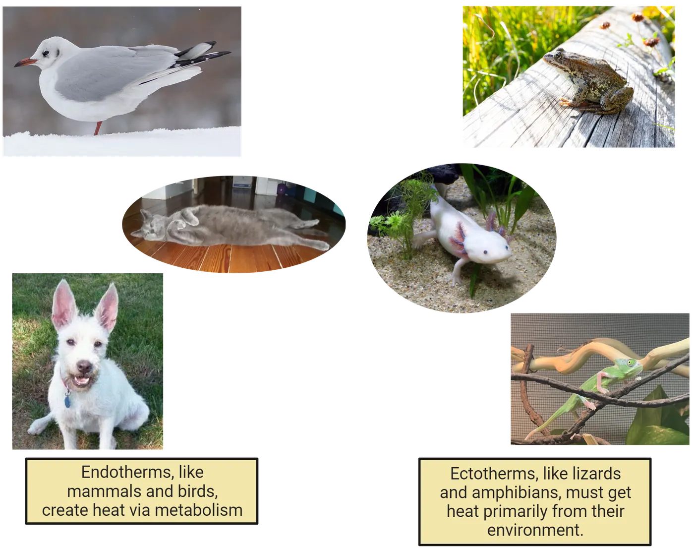
Body temperatures also increase in response to increases in physical activity, such as going for a run or lifting weights. During strenuous physical activity, the body must respond to increases in core body temperatures via changes in physiology and behavior to release excess heat and cool down.
Regulation of core body temperature is highly important for survival. Maintaining core body temperatures within a narrow range is necessary for the structural integrity of cells and optimal biochemical dynamics throughout the body. All animals employ homeostatic mechanisms to ensure that their core body temperatures do not rise or fall outside an optimal range. Mammals have evolved the ability to sense temperature both throughout their outer body surfaces and within their inner core and, when necessary, engage in a variety of physiological and behavioral mechanisms to restore homeostasis.
Neural sensation of body temperature
The feeling of warmth from sitting by a fire or the feeling of cold from stepping outside on a windy, winter day seems so natural and instinctive… it can be easy to forget that the nervous system must measure these temperatures and cause the sensations of “hot” and “cold.” How does the nervous system measure external temperatures?
Specific neurons measure body temperature by expressing specialized ion channels that only open and allow ion flow in response to narrow temperature ranges. These temperature-gated ion channels are a subset of a family of ion channels called “Transient Receptor Potential (TRP)” channels, commonly referred to as thermoTRPs (TRP ion channels that regulate body temperature) (see Introduction).
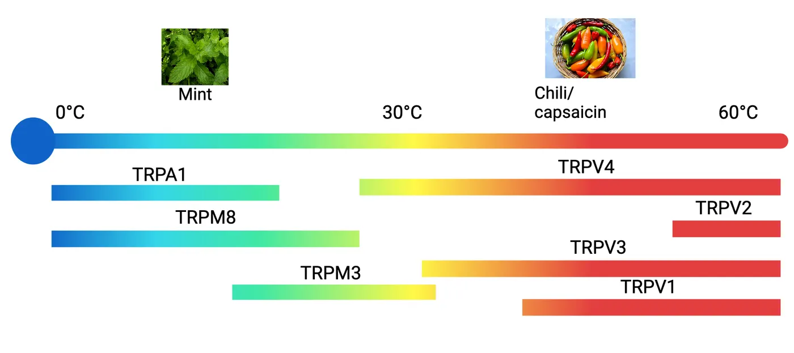
Once open, these ion channels allow positively charged cations to pass through the membrane and cause depolarization within neurons. For example, the TRPV1 ion channel opens at temperatures around 42 °C. Therefore, neurons that express TRPV1 alert the nervous system that a nearby stimulus is above a core body temperature of 37 °C. In contrast, the TRPM8 ion channel opens in response to temperatures at and below 22 °C, indicating the presence of a stimulus much cooler than core body temperature. Multiple TRP channels have been discovered that exhibit their own temperature ranges for activation, and the combination of these thermoTRPs allow the nervous system to determine environmental and internal temperatures.
Amazingly, many of these TRP channels can also open upon exposure to certain chemical compounds that are naturally produced by plants (see Introduction). For example, TRPV1 channels open in response to capsaicin, a chemical naturally produced by chili peppers. Because neurons that express TRPV1 cannot distinguish between a naturally warm stimulus and capsaicin, foods with chili peppers cause the sensation of heat whether they are actually warm or not. Likewise, TRPM8 channels open in response to menthol, a chemical produced naturally in mint leaves. Therefore, foods and products (such as mouthwashes) containing menthol feel cold even if they are at room temperature.
Neural systems that sense and control thermoregulation
Temperature in mammals seems to be sensed via two independent systems. One system senses changes in temperature along the external surface of the body (such as the skin and mouth) and functions primarily in the conscious detection of hot or cold stimuli from the environment. The other system senses changes in core body temperature and functions primarily in regulating the temperature of the internal environment.
Temperature at the body surface is measured by specialized neurons in the dorsal root ganglia (for the lower body) or trigeminal ganglia (for the head). These neurons send sensory projections to the body surface that express thermoTRP ion channels in the skin (Sensation of body temperature in the skin). When specific thermoTRP ion channels open in response to environmental temperatures, the neurons that express them increase action potential firing frequency, ultimately releasing excitatory neurotransmitter onto neurons in the spinal cord. This information is relayed to the somatosensory cortex for the conscious perception of temperature. Using these neural circuits, animals can detect changes in temperature at specific body locations. For example, picking up a hot mug of coffee or a cold glass of water causes the perception of temperature change specifically on the hand. If you step into a warm shower or jump into a cold lake, peripheral sensors will indicate a change in environmental temperature from all over the body surface.
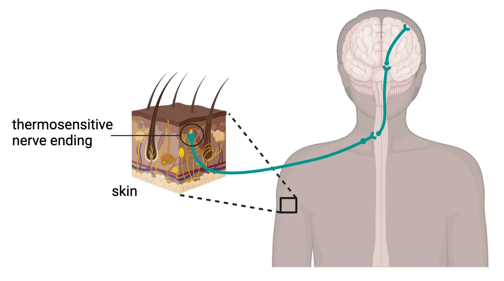
Core body temperature, the temperature of the internal environment of an animal, is measured directly in the brain by neurons in a region of the hypothalamus called the pre-optic area (POA) (Neural regulation of body temperature). The POA is sensitive to the temperature of the blood that flows within the blood vessels surrounding these neurons. Because blood travels throughout the internal organs before reaching the POA, the blood temperature within the POA is likely to be indicative of the overall body temperature. Some POA neurons increase action potential frequency in response to relatively warm core body temperatures—the warmer the blood, the greater the action potential frequency. A separate group of POA neurons increase activation in response to colder core body temperatures.
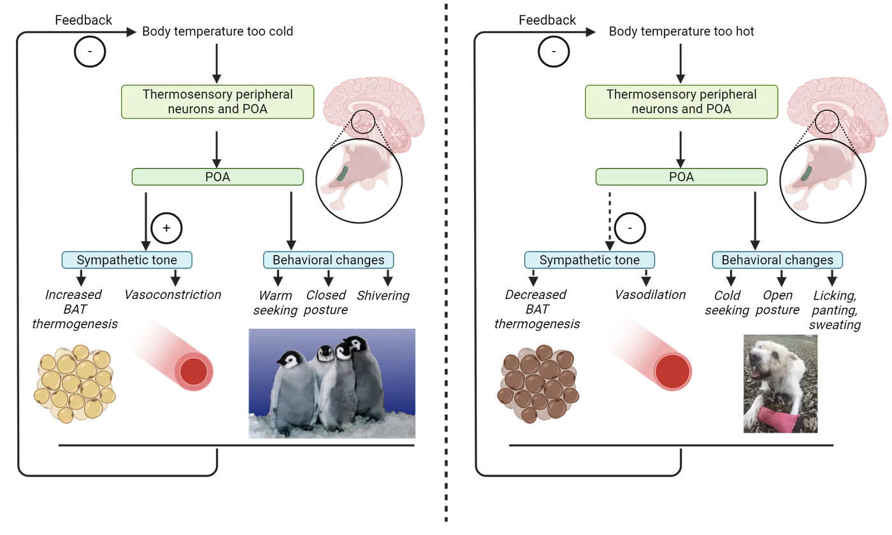
Neurons that measure body temperature from specific parts of the periphery also send information to the POA. Therefore, the POA senses information about core body temperature and peripheral body temperatures to ultimately function as a control center that maintains temperature homeostasis. Interestingly, some POA neurons also function in the allostatic increase of body temperature experienced during a fever to overcome a virus or bacterial infection (see the feature box on Investigating allostasis of body temperature during illness).
Effector systems that regulate thermoregulation
If core body temperature deviates from a set point, how does the nervous system cause a change that restores a healthy value? Mammals employ numerous physiological and behavioral mechanisms to regulate body temperature. Both the warm-sensitive and cold-sensitive neurons within the POA project axons throughout the brain that, in response to an increase in action potential frequency, engage different effector systems (Neural regulation of body temperature).
One way in which the POA regulates temperature is to cause changes in physiological effector systems. These changes are often unconscious and regulated by the autonomic nervous system. For example, in response to cold internal body temperatures, cold-sensitive POA neurons in mammals activate effector neurons in the sympathetic nervous system that increase body heat. The sympathetic nervous system increases heat primarily by stimulating brown adipose tissue (BAT), fat cells that increase metabolic activity to release heat. Increasing sympathetic tone also constricts blood vessels so that warm blood does not lose heat to the external environment. In contrast, when body temperature becomes too high, warm-sensitive POA neurons decrease sympathetic tone, decreasing BAT thermogenesis and causing vasodilation of blood vessels to release excessive heat.
The POA also regulates temperature by causing changes in animal behavior. In response to cold internal body temperatures, cold-sensitive POA neurons cause an unpleasant cold sensation that motivates an animal to seek and conserve heat. Think about how uncomfortable it can be to feel cold—this aversive behavioral drive causes animals to relocate to warmer locations, such as places exposed to sunlight or other sources of heat. Animals can also change posture to decrease the exposed surface area of their bodies, thereby minimizing heat loss to the environment. Finally, animals engage in species-specific behaviors such as shivering, huddling with other individuals, or nest building to increase heat. In response to warmer temperatures, warm-sensitive POA neurons similarly cause an unpleasant warm sensation that motivates animals to cool down by seeking cooler, shady environments. Many animals change their postures to expose their skin to the outside air and release heat to the environment. Some species also engage in licking their bodies, panting, or sweating.
Summary
Regulation of core body temperature is important for survival to ensure that cells and organ systems are neither too hot nor too cold. Temperature can be sensed throughout the skin via thermosensitive ion channels, expressed in neurons that ultimately inform the brain about changes in body temperature throughout the body. Core body temperature is also sensed directly in the preoptic area (POA) of the hypothalamus. The POA serves as both a sensory and control center that employs several physiological and behavioral effector mechanisms to regulate homeostasis of body temperature. If too cold, an animal might increase sympathetic nervous system activity to increase metabolism and constrict blood vessels while simultaneously altering behavior to seek warmth. If too warm, an animal might decrease sympathetic tone, engage in behaviors such as panting or sweating, and seek cooler environments.
Key terms
endotherms, ectotherms, thermoTRPs, pre-optic area (POA)References
Ilanges, A., Shiao, R., Shaked, J., Luo, J. D., Yu, X., & Friedman, J. M. (2022). Brainstem ADCYAP1+ neurons control multiple aspects of sickness behaviour. Nature, 609(7928), 761–771. https://doi.org/10.1038/s41586-022-05161-7
Kashio, M., & Tominaga, M. (2022). TRP channels in thermosensation. Current Opinion in Neurobiology, 75, 102591. https://doi.org/10.1016/j.conb.2022.102591
Madden, C. J., & Morrison, S. F. (2019). Central nervous system circuits that control body temperature. Neuroscience Letters, 696, 225–232. https://doi.org/10.1016/j.neulet.2018.11.027
Osterhout, J. A., Kapoor, V., Eichhorn, S. W., Vaughn, E., Moore, J. D., Liu, D., Lee, D., DeNardo, L. A., Luo, L., Zhuang, X., & Dulac, C. (2022). A preoptic neuronal population controls fever and appetite during sickness. Nature, 606(7916), 937–944. https://doi.org/10.1038/s41586-022-04793-z
Tan, C. L., & Knight, Z. A. (2018). Regulation of body temperature by the nervous system. Neuron, 98(1), 31–48. https://doi.org/10.1016/j.neuron.2018.02.022
Practice The multiple-choice and fill-in-the-blank questions for this section are interactive and live on OpenStax, so they are not carried here: open the book on openstax.org.
16.4Neural Control of Feeding Behavior
By the end of this section, you should be able to
- Describe the reasons why animals need to maintain homeostasis for calories and energy balance.
- Describe the neural components of homeostatic systems that regulate hunger and satiety.
People typically celebrate major milestones (e.g., birthdays, promotions) or holidays (e.g., Thanksgiving, Independence Day), with a large, delicious meal. Think about the last time you gathered with friends or family for such an event. In the morning and early afternoon, you might only have had a light breakfast or lunch in anticipation of all the good food to come. By the time dinner starts, you are hungry and can’t wait to eat. This hunger is palpable—your stomach might gurgle and feel “empty,” and you think about food more and more. Perhaps you even start to feel “hangry”—emotionally upset because of your growing appetite. Once you finally start eating, your hunger dissipates, and you enjoy the meal. However, in the moments to come, another interesting process starts to occur—you eat so much that, not only are you satiated, you start to feel full. In fact, on holidays like Thanksgiving, people typically overeat to the point that they feel uncomfortably full and can’t eat another bite.
This process of transitioning from a hungry state to a full state presents an interesting neurobiological question. At one moment in time, food is rewarding, and you are highly motivated to eat. But then, just 20-30 minutes later over the course of a meal, food no longer seems rewarding to consume—in fact, it becomes aversive. When you feel full, you wouldn’t consume even the most delicious dish. How does the nervous system change the rewarding and aversive properties of food? How does the brain ensure that you consume enough food but not too much such that it overwhelms the digestive system?
Eating food is ultimately about maintaining an optimal caloric intake. All animals need to consume calories for energy and nutrition—and the only way to acquire calories is to seek food. Therefore, energy homeostasis requires that an animal’s nervous system sense its caloric need and produce an appropriate motivational state to consume food, what we call being hungry or full. If we don’t consume sufficient calories, we might become undernourished and lose weight to an unhealthy degree. In contrast, if we consume too much food, we store excess calories as body fat that could cause further health problems. Fortunately, our energy homeostasis systems work so well that the average person doesn’t fluctuate in body weight more than 1-2 pounds over the course of a year. Like all homeostatic processes, various populations of cells serve as sensors, control centers, and effectors for driving and halting food intake to maintain energy homeostasis.
Hormonal and neuronal sensors of caloric intake
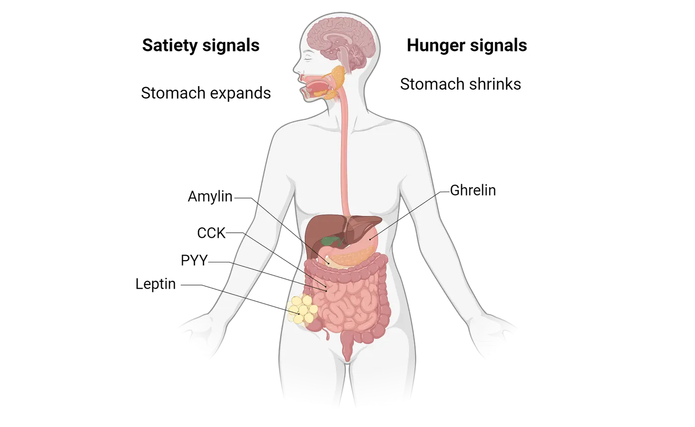
The nervous system measures caloric need using neural and hormonal mechanisms (Hormonal indication of food intake). The initial ingestion of food is sensed by the degree to which the stomach expands. The stomach is composed of elastic smooth muscle fibers that can stretch upon the ingestion of foods and liquids. Sensory fibers from the vagus nerve (the 10th cranial nerve) surrounding the stomach increase activity the more the stomach is stretched (Stomach fullness as a satiety signal). Therefore, relatively high activity in these fibers indicate that the stomach is becoming more full, while relatively low activity in these fibers indicate that the stomach is empty. The amount of activity in these neurons indicates the degree to which an animal should feel full. (This is why drinking a large amount of water can temporarily make you feel full—the stomach is stretched in response to the water even though there are no calories). (See Studying the effect of digestive organ stretch on neural activity.)
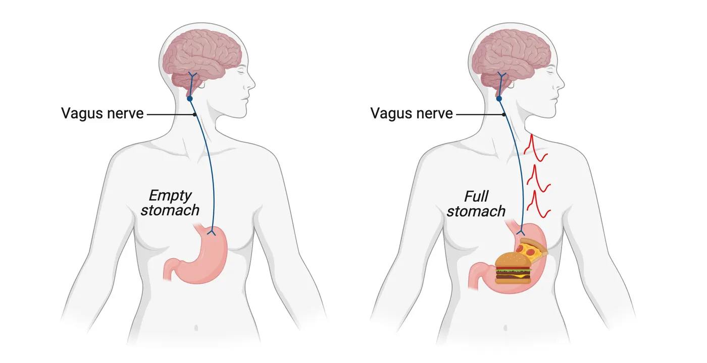
Caloric need is also sensed by cells throughout the digestive tract that release a variety of hormones to indicate that an animal has recently ingested food. Many of these hormones are anorexigenic, meaning that they ultimately cause a reduction in feeding. For example, in response to food passing from the stomach into the gut, specialized cells in the pancreas release amylin. Cells in the intestines release cholecystokinin (CCK) and peptide YY (PYY). Levels of these hormones correlate with the amount of food recently consumed—they are relatively low just before a meal and relatively high during and just after a meal (Variation in blood hormones after a meal). The presence of these hormones in the bloodstream indicate that an animal has just consumed a meal and ultimately cause an animal to feel satiated. In contrast, prior to a meal, cells in the stomach release the orexigenic hormone ghrelin (Variation in blood hormones after a meal). Elevated ghrelin levels indicate an absence of food and cause an animal to feel hungry.
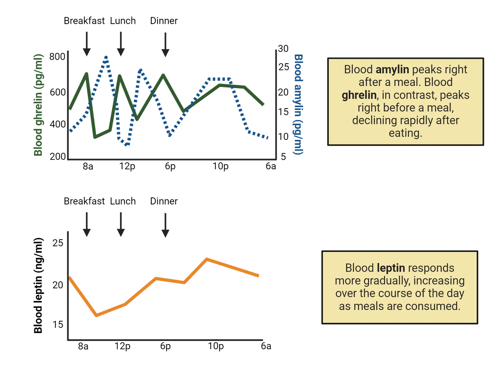
Food intake is also regulated in a more long-term manner through the release of the hormone leptin (Variation in blood hormones after a meal). Leptin is released by adipocytes in white adipose tissue (WAT) in proportion to their size. Therefore, an animal with relatively low body fat will not release as much leptin as compared to levels if the same animal gains weight and accumulates more body fat. The larger the fat mass, the more leptin is released, which ultimately causes an animal to feel less hungry.
Therefore, if you have not eaten recently and are just about to start a meal, your stomach is likely to be in a contracted state, your blood concentration of ghrelin is relatively high, and your blood concentration of amylin, CCK, and PYY is relatively low. As you eat a meal, your stomach expands, ghrelin levels decrease, and concentration of amylin, CCK, and PYY increase. These signals are ultimately integrated within the brain.
Central integration and regulation of food intake
Neural and hormonal signals from the digestive tract and adipose tissue are integrated in the central nervous system. Although there are multiple parts of the brain that regulate food intake, the two areas that seem to directly detect neural and hormonal signals from the periphery are the hypothalamus and brainstem.
The hypothalamus has several groups of neurons located along circumventricular organs, areas where the blood brain barrier is relatively diminished such that hormones and other substances can easily pass from the blood to the extracellular environment (Circumventricular organs). These regions include the organ vasculosum of the lateral terminalis (OVLT), the median eminence, the neurohypophysis in the pituitary, the subfornical organ (SFO), the pineal gland, and the subcommissural organ. These brain regions play roles in multiple homeostatic processes.
![Diagram of sagittal section of human brain at midline showing location of circumventricular organs. Organ vasculosum of the lateral terminalis is on superior side of hypothalamus. Median eminence is on inferior side of hypothalamus. Neurophysis sits in the pituitary, extending beneath the medial eminence. Subfornical organ in just anterior to the thalamus, superior to the hypothalamus. Subcommissural organ is dorsal to the superior end of the brainstem. Pineal gland extends dorsal to the subcommissural organ.](../assets/textbook/img/Image-16.22_Circumventricular-organs.webp)
In the case of caloric regulation, neurons in a region of the hypothalamus called the arcuate nucleus, which sits adjacent to the median eminence, have receptors for hormones that regulate feeding. The arcuate nucleus can be subdivided into two antagonistic populations of neurons: those that express the neuropeptide agouti-related peptide (AgRP) and those that express pro-opiomelanocortin (POMC) (Acruate nucleus neuron tracing).
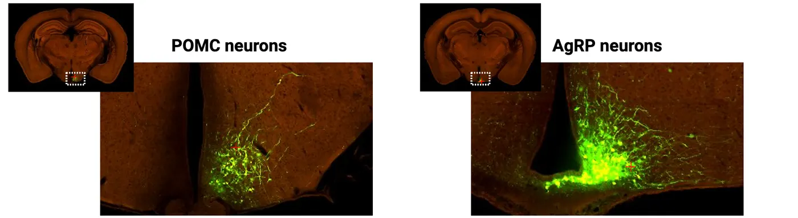
AgRP neurons increase activity in response to orexigenic hormones, such as ghrelin, and are inhibited by anorexigenic hormones. In contrast, POMC neurons increase activity in response to anorexigenic hormones and are inhibited by orexigenic hormones (Hunger signaling in the brain). Therefore, AgRP and POMC neurons are like two sides of a balance beam—the relative activity within AgRP and POMC neurons correspond with the homeostatic feeding state of an animal, with AgRP neurons preferentially activated the longer an animal goes without feeding, and POMC neurons activated when an animal consumes a meal (see feature box on studying the regulation of food intake by the hypothalamus).
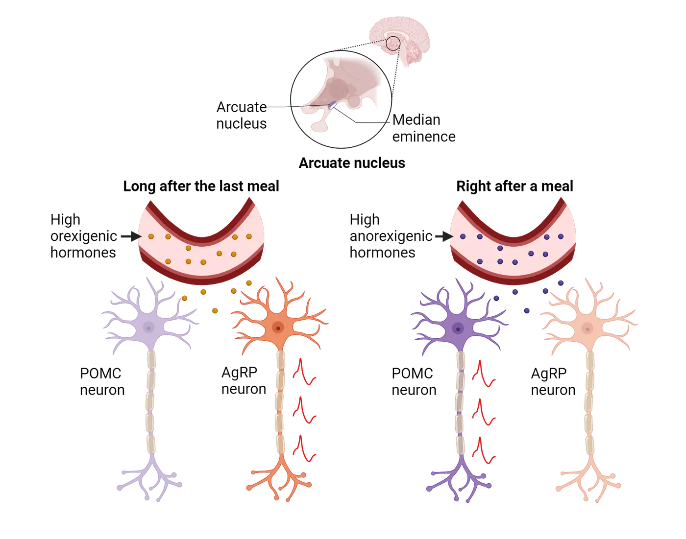
AgRP and POMC neurons therefore serve as control centers that integrate neural and hormonal information from the body about feeding. They also integrate information from other sources—for example, sensory information from visual, olfactory, and even auditory stimuli that can inform animals of feeding opportunities. AgRP and POMC neurons, in turn, affect several downstream populations of neurons that ultimately control hunger and satiety (Central regulation of food intake by the hypothalamus). Some downstream areas directly generate the emotional states of being hungry or full. Some downstream areas inhibit competing behaviors such as pain, itch, sex, and sleep to ensure that animals prioritize food seeking depending on homeostatic need.
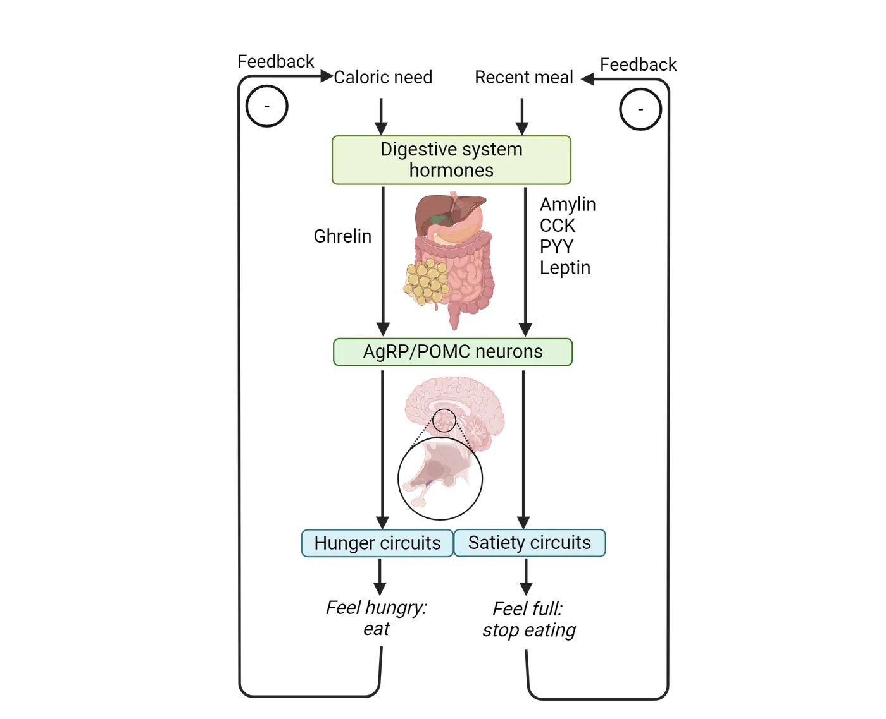
Feeding is also directly regulated by neurons in the brainstem (Central regulation of food intake by the brainstem). These neurons seem to function in satiety and the feeling of being unpleasantly full after a meal. For example, when the stomach becomes relatively full and enlarged, neurons from the vagus nerve transmit this information to a population of neurons in the brainstem called the nucleus tractus solitarius (NTS). Increased stomach stretch causes increased NTS neural activity (see feature box on studying the effect of digestive organ stretch on neural activity). These neurons also have receptors for several anorexigenic hormones, including amylin, CCK, and PYY. The NTS sends axonal projections to other areas of the brain, especially parts of the limbic system (such as the amygdala) that seem to mediate feelings of satiety and the uncomfortable aspects of feeling full.
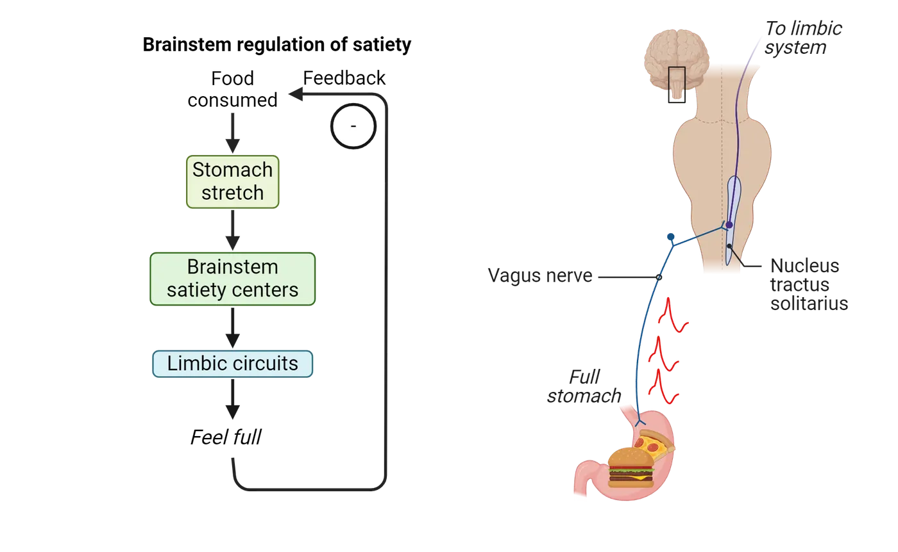
Dysfunction of hypothalamic and brainstem populations, as well as their upstream and downstream connections, can lead to food intake disorders including obesity and eating disorders (see next section).
Food intake disorders
Dysregulation of the hormones and neurons that regulate food intake can cause severe problems in body weight regulation leading to obesity or various eating disorders. Because modern day society is very different from natural conditions faced by animals in the wild, humans encounter environmental stimuli (a surplus of highly palatable and calorically-dense food, extreme societal pressure to maintain a certain body weight, etc.) that contribute to food intake disorders that are often difficult to reproduce in animal models of disease.
Obesity is a complex and multifactorial disorder characterized by an excessive accumulation of body fat. The neurobiology of obesity is complex, with many potential underlying causes. Obesity is ultimately caused by consuming too many calories relative to metabolic activity and caloric expenditure.
Why don’t homeostatic systems prevent obesity? Consuming high calorie foods and gaining body weight likely causes dysregulation of the hormones and neurons that regulate food intake in the hypothalamus. For example, individuals with obesity often exhibit a state of leptin resistance, in which neurons in the hypothalamus downregulate leptin receptors and become insensitive to the satiety hormone. This leptin resistance results in increased appetite and decreased energy expenditure. Additionally, chronic overconsumption of high-calorie, high-fat foods can cause changes in the reward pathways of the brain, resulting in a decrease in the perceived pleasure of healthier, lower calorie foods.
Like obesity, eating disorders are complex psychiatric conditions characterized by altered eating behavior. These disorders often manifest with excessive and unrealistic body image perception. For example, anorexia nervosa is a disorder in which an unwarranted fear of gaining weight causes an individual to engage in too much fasting or exercising such that they manifest an abnormally low body weight. Bulimia nervosa is characterized by bouts of overeating followed by self-induced vomiting or extreme exercise to avoid absorbing calories.
Because eating disorders are intertwined with body image perception, these disorders do not seem to be caused by dysfunction of the neural systems and circuits that maintain caloric homeostasis. Indeed, individuals with food disorders are often very hungry and intentionally suppress the homeostatic motivation to consume food to correct for low body weights. Therefore, brain regions implicated in the pathophysiology of eating disorders seem to be located in areas that regulate cognition and perception, such as the cerebral cortex. The insular cortex regulates the conscious perception of taste, hunger, and satiety, and likely contributes to the etiology of eating disorders. Additionally, the prefrontal cortex is involved in executive functions such as decision making and impulse control. Neurons in the prefrontal cortex likely suppress homeostatic signals from the hypothalamus and brainstem to cause dysregulated food intake.
Summary
Energy homeostasis ensures that animals consume enough calories for their daily metabolic needs without overwhelming their digestive systems with too much food. Feeding behavior is regulated by hormonal and neuronal systems in the peripheral and central nervous systems. A variety of hormones released by the digestive track including amylin, CCK, and PYY, as well as hormones released by fat cells, such as leptin, inform the brain about the course of a meal and energy reserves. Additionally, stomach volume is sensed by the vagus nerve. Various populations of neurons in the brain ultimately regulate feelings of hunger and satiety. Just before a meal, AgRP neurons initiate a behavioral state of feeling hungry and an animal is motivated to seek food. During and after a meal, POMC neurons and brainstem satiety centers, like the NTS, progressively cause a behavioral state of feeling full. Taken together, the neural populations that regulate food intake cause motivation to seek food such that an animal consumes enough calories throughout the day but not so much that it continuously overeats. Dysfunction of energy homeostatic systems can cause an imbalance that leads to obesity or malnourishment.
Key terms
anorexigenic, amylin, cholecystokinin (CCK), peptide YY (PYY), orexigenic, ghrelin, leptin, circumventricular organs, arcuate nucleus, agouti-related peptide (AgRP), pro-opiomelanocortin (POMC), obesity, eating disorders, anorexia nervosa, bulimia nervosaReferences
Alcantara, I. C., Tapia, A. P. M., Aponte, Y., & Krashes, M. J. (2022). Acts of appetite: Neural circuits governing the appetitive, consummatory, and terminating phases of feeding. Nature Metabolism, 4(7), 836–847. https://doi.org/10.1038/s42255-022-00611-y
Aponte, Y., Atasoy, D., & Sternson, S. M. (2011). AGRP neurons are sufficient to orchestrate feeding behavior rapidly and without training. Nature Neuroscience, 14(3), 351–355. https://doi.org/10.1038/nn.2739
Ran, C., Boettcher, J. C., Kaye, J. A., Gallori, C. E., & Liberles, S. D. (2022). A brainstem map for visceral sensations. Nature, 609(7926), 320–326. https://doi.org/10.1038/s41586-022-05139-5
Williams, E. K., Chang, R. B., Strochlic, D. E., Umans, B. D., Lowell, B. B., & Liberles, S. D. (2016). Sensory neurons that detect stretch and nutrients in the digestive system. Cell, 166(1), 209–221. https://doi.org/10.1016/j.cell.2016.05.011
Zimmerman, C. A., & Knight, Z. A. (2020). Layers of signals that regulate appetite. Current Opinion in Neurobiology, 64, 79–88. https://doi.org/10.1016/j.conb.2020.03.007
Practice The multiple-choice and fill-in-the-blank questions for this section are interactive and live on OpenStax, so they are not carried here: open the book on openstax.org.
16.5Neural Control of Drinking Behavior
By the end of this section, you should be able to
- Describe the reasons why animals need to maintain homeostasis for water.
- Describe the neural components of homeostatic systems that regulate water balance and drinking behavior.
Consider how interesting (or uninteresting) water is as a stimulus. Colorless, odorless, tasteless… By definition, water is about as neutral a stimulus as one can imagine. Most of the time, we don’t think of water as rewarding. We often walk past drinking fountains and water coolers without feeling like we are missing a valuable opportunity. However, when we don’t have enough water in our bodies, drinking water becomes highly rewarding. The feeling of being thirsty is very unpleasant and the longer we go without water, the more extraordinary lengths we will go to take a drink.
Mammals are composed mostly of water. Over half of a human’s body weight is water, with approximately 65% located within the body cells, 28% in the extracellular fluid, and 7% in the blood. Maintaining an appropriate amount of water in our cells and surrounding fluids is critical for maintaining the structural integrity of cells and for providing an aqueous environment for the solutes (nutrients, ions, and biomolecules) that make life possible.
Water enters and leaves cells by the process of osmosis—the diffusion of water across a membrane from regions of low solute concentration to regions of high solute concentration (Osmolarity and tonicity). The unit of measurement of solute concentration within a solution is osmolarity, the number of moles of solute per liter of solution. Mammalian cells have an osmolarity of approximately 300 mOsm/L. If cells are surrounded by a solution of equal osmolarity, the environment is said to be isotonic, and there is no net water flow in or out of the cell. However, if the cell is surrounded by a solution that has a higher solute concentration, the environment is hypertonic. In these conditions, water will flow from inside the cell to the extracellular fluid, causing the cell to shrink. In contrast, if the cell is surrounded by a solution that has a lower solute concentration, the environment is hypotonic, and there is net movement of water from outside the cell to the cytoplasm. This state can cause the cell to swell up and even burst. Therefore, osmotic homeostasis systems must ensure that the blood and extracellular solutions are stably maintained at 300 mOsm/L.
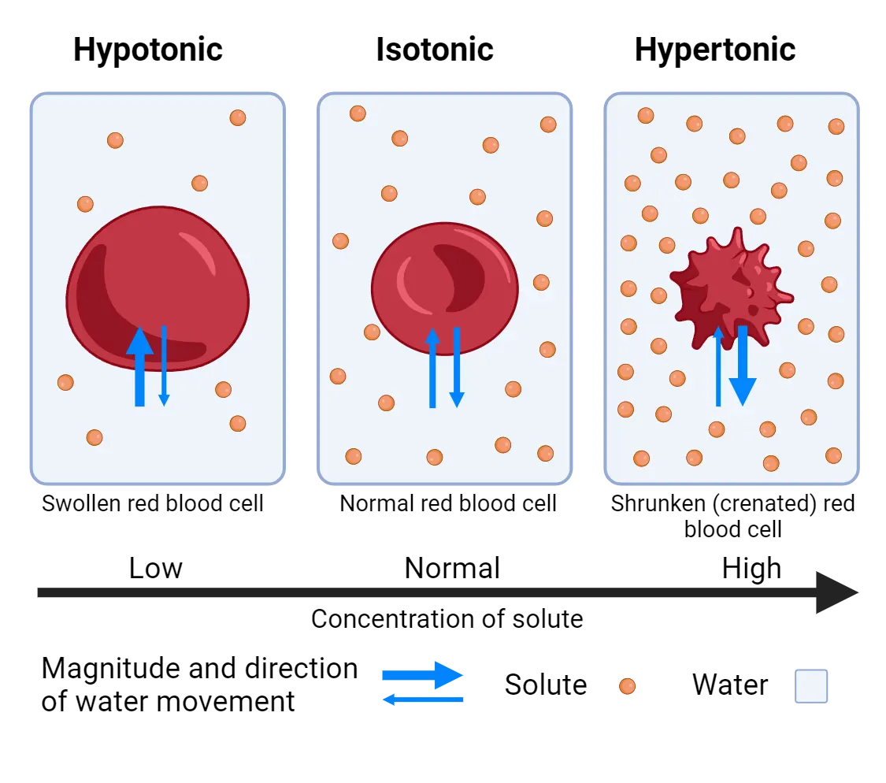
To maintain osmotic homeostasis, animals must measure the osmolarity of the blood and ensure that the amount of water lost over time is equal to the amount of water gained over time. Our bodies constantly lose water over time due to evaporation and the need to urinate metabolic waste products. Although animals can generate some water molecules on their own via the process of cellular respiration, most mammals obtain water primarily by ingesting liquids. When the osmolarity of the blood becomes too low, homeostatic systems motivate us to excrete more water in the urine (having to pee!). When the osmolarity of the blood becomes too high, homeostatic systems motivate us to consume water—a process we describe as being thirsty.
Osmotic homeostasis systems
Mammals sense blood osmolarity within a brain structure called the subfornical organ (SFO) (Neural regulation of water intake). Some SFO neurons increase action potential frequency when the blood becomes hypertonic, while others increase neural activity when the blood becomes hypotonic. These two populations of neurons within the SFO project to other hypothalamic populations including the organ vasculosum of the lateral terminalis (OVLT). Together, the SFO and OVLT control the neural response to osmotic change.
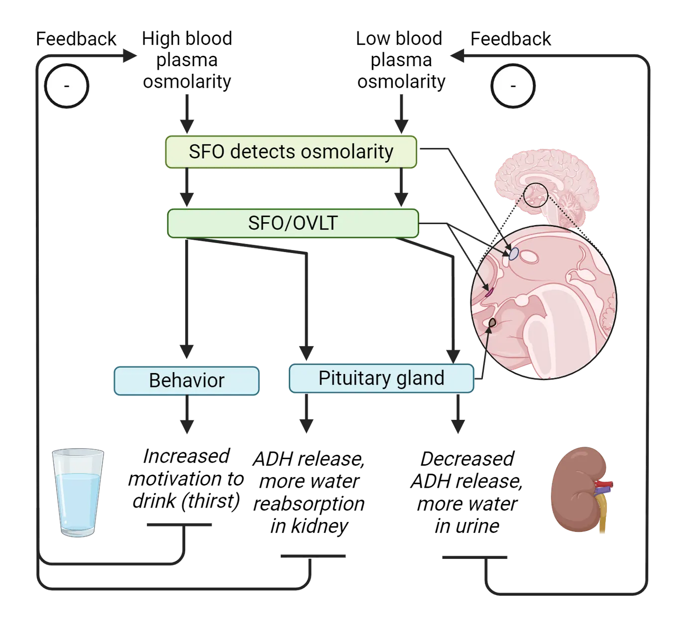
For example, if you ingest food that is high in solutes (such as a handful of salty crackers), the solutes become absorbed by the bloodstream and can increase the hypertonicity of blood. Likewise, if you have not consumed water in a relatively long time (multiple hours), the blood also risks becoming hypertonic. In response to hypertonic conditions, the SFO and OVLT activate effector systems to increase the amount of water within the blood (Neural regulation of water intake). One method of increasing water is to motivate an animal to drink by creating the sensation of thirst—an unpleasant condition in which the tongue dries and the act of swallowing liquids becomes highly rewarding. Thirst is a complex motivational state mediated by multiple downstream areas, including regions of the cerebral cortex and limbic areas. How neurons in these structures collectively coordinate the aversive feeling of being thirsty is an active area of investigation.
In addition to causing changes in behavior, the SFO and OVLT can cause a physiological response that results in less water loss in the urine (Neural regulation of water intake). In response to hypertonic states, the SFO and OVLT cause an increase in the release of antidiuretic hormone (ADH) from the pituitary gland. This hormone primarily acts on cells within the kidney to release less water into the urine. This regulation of urine water content is why the color of urine can change depending on hydration state—the more water you drink, the less ADH is released from the pituitary, and the clearer your urine will become! Dysregulation of the ADH system (for example, mutations in the gene that encodes ADH or the ADH receptors in the kidney) disrupt osmotic homeostasis by causing abnormal water loss and urine formation by the kidneys. This disorder, called diabetes insipidus, can cause severe dehydration and constant thirst if untreated.
Interestingly, regulation of osmotic balance has a feed-forward mechanism, in which a homeostatic response occurs before there is actually a change in the system (see feature box on Studying feed-forward mechanisms in thirst). For example, if you feel thirsty and drink a large glass of water, sensors on the tongue detect the ingestion of water and cause a change in SFO neural activity before the water is actually absorbed into the bloodstream from the digestive tract. This mechanism allows you to feel satiated immediately when taking a large drink of water—otherwise, you would have to wait several minutes to feel the effect. In this way, homeostasis can be maintained faster than normal digestive processes would otherwise allow.
Summary
Homeostasis for water ensures that our cells and organ systems maintain a precise osmotic balance. Neurons in the SFO and OVLT sense a change in plasma osmolarity in adjacent blood vessels. If the plasma osmloarity becomes too hypertonic, the SFO and OVLT excite downstream neural populations that cause feelings of thirst and the motivation to drink. The SFO and OVLT also causes an increase in the release of antidiuretic hormone from the pituitary gland, causing the kidney to release less water into the urine.
Key terms
osmosis, osmolarity, isotonic, hypertonic, hypotonic, subfornical organ (SFO), organ vasculosum of the lateral terminalis (OVLT), antidiuretic hormone (ADH), feed-forward mechanismReferences
Augustine, V., Lee, S., & Oka, Y. (2020). Neural control and modulation of thirst, sodium appetite, and hunger. Cell, 180(1), 25–32. https://doi.org/10.1016/j.cell.2019.11.040
Gizowski, C., & Bourque, C. W. (2018). The neural basis of homeostatic and anticipatory thirst. Nature Reviews. Nephrology, 14(1), 11–25. https://doi.org/10.1038/nrneph.2017.149
Ichiki, T., Augustine, V., & Oka, Y. (2019). Neural populations for maintaining body fluid balance. Current Opinion in Neurobiology, 57, 134–140. https://doi.org/10.1016/j.conb.2019.01.014
Zimmerman, C. A., Lin, Y. C., Leib, D. E., Guo, L., Huey, E. L., Daly, G. E., Chen, Y., & Knight, Z. A. (2016). Thirst neurons anticipate the homeostatic consequences of eating and drinking. Nature, 537(7622), 680–684. https://doi.org/10.1038/nature18950
Zimmerman, C. A., Leib, D. E., & Knight, Z. A. (2017). Neural circuits underlying thirst and fluid homeostasis. Nature Reviews. Neuroscience, 18(8), 459–469. https://doi.org/10.1038/nrn.2017.71
Practice The multiple-choice and fill-in-the-blank questions for this section are interactive and live on OpenStax, so they are not carried here: open the book on openstax.org.
Adapted from Introduction to Behavioral Neuroscience by OpenStax, licensed under CC BY-NC-SA 4.0. Access for free at openstax.org. Changes: set in this site’s own pages and type, the images recompressed, the interactive exercises and videos linked rather than carried. This adaptation is offered under the same licence.